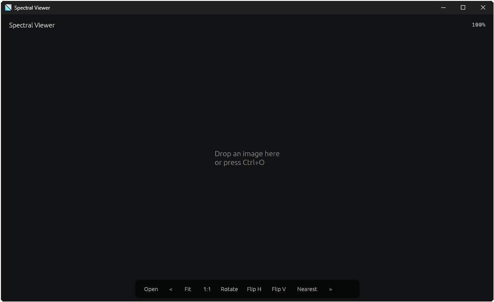

A lightweight and minimal image viewer.
A successor to Emulsion, built after the original project was discontinued.

Overview
Spectral Viewer opens local images quickly and lets you browse a folder without editor-style clutter.
Open an image, zoom, pan, switch scaling, and go fullscreen.
Features
- Browse every supported image in the same folder
- Smooth zoom centred on the cursor, plus click-drag panning
- Smooth or nearest-neighbour scaling for pixel art
- Rotate and flip without changing the file
- Animated GIF and WebP playback
- Copy to clipboard, show in Explorer, or move to the Recycle Bin
- Fullscreen with the controls hidden
- EXIF orientation and image details (size, format, colour mode)
- Background decoding and preloading of neighbouring images
- Automatic updates from GitHub releases
Showcase
Pixel art friendly
Switch between smooth and nearest-neighbour scaling.
Rotate and flip
Rotate the image and flip it horizontally or vertically without changing the file.
Cursor-anchored zoom
Zoom towards the cursor so you can get into a specific area quickly.
Controls
| Open image | Ctrl + O or drag and drop |
| Previous / next | ← →, Page Up Page Down, or mouse back / forward |
| First / last | Home / End |
| Zoom | Mouse wheel, + / - |
| Pan | Click and drag |
| Fit to window / actual size | F / Ctrl + 0 |
| Rotate clockwise / counter-clockwise | R / Shift + R |
| Flip horizontally / vertically | H / V |
| Smooth / nearest-neighbour scaling | S |
| Copy image | Ctrl + C |
| Show in Explorer | E |
| Move to Recycle Bin | Delete |
| Fullscreen | F11 or double-click; Esc to leave |
Formats
AVIF, BMP, DDS, OpenEXR, GIF, HDR, ICO, JPEG, PNG, PNM, QOI, SVG, TGA, TIFF, and WebP.
Download
The installer runs per user without administrator access and keeps itself up to date.